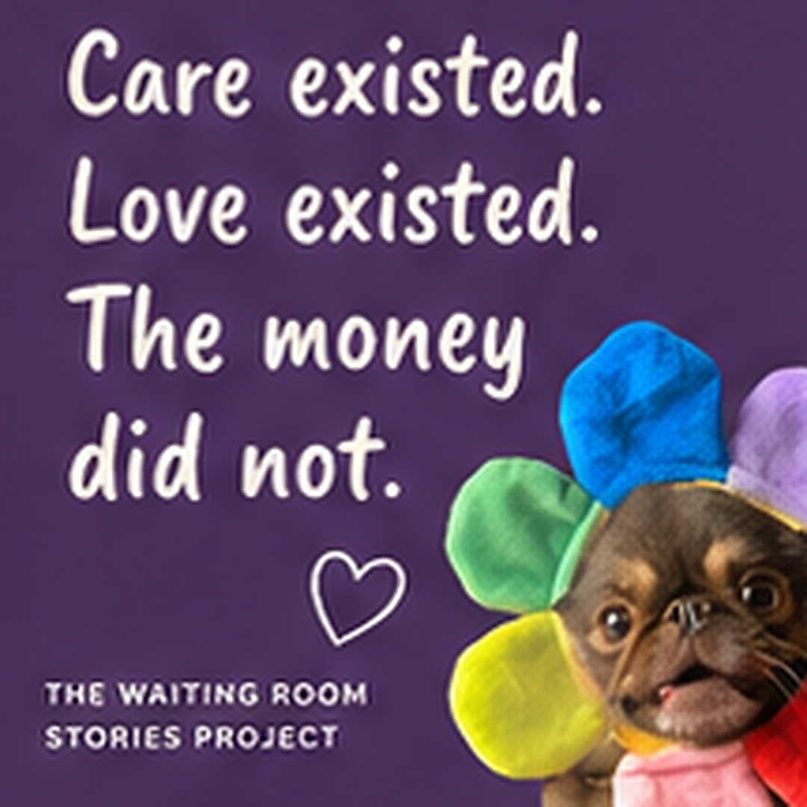
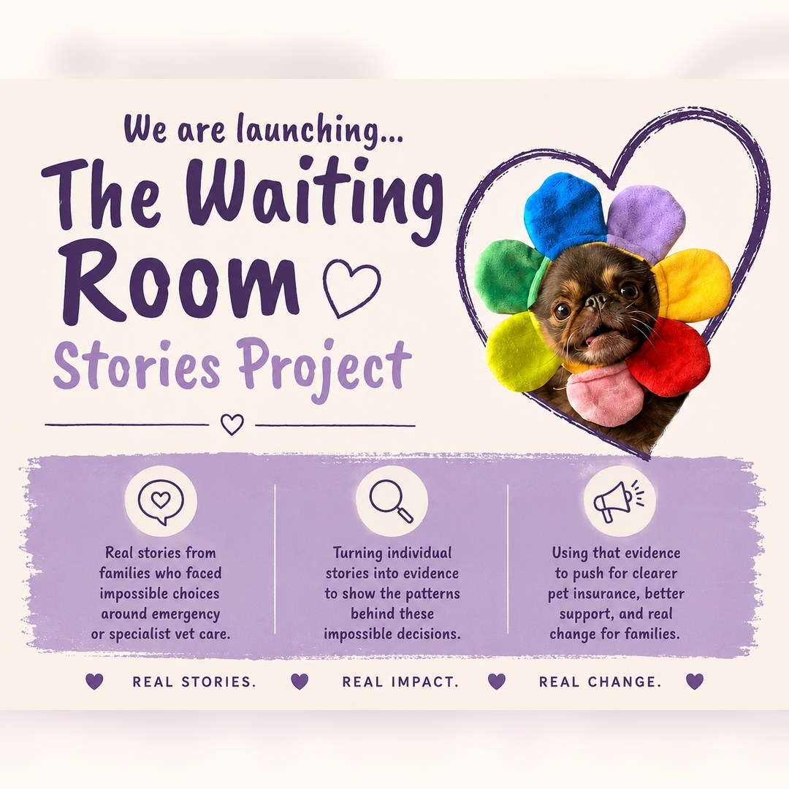

Listens to owners
People can share as little as they want. A few sentences can still help show what happens during emergency and specialist care decisions.
Emergency vet care, insurance limits, and the families left in between.
Real stories. Real impact. Real change.
Care existed. Love existed. The money did not.
We collect owner stories about the moment emergency or specialist veterinary care was possible, but cost, insurance limits, reimbursement delays, upfront payment, or lack of fast support decided whether a family could reach it.

Why this exists
They are choosing between what exists and what they can reach. Emergency care. Specialist referrals. Imaging. ICU. Surgery. Hospitalisation. Treatment that could give a pet a chance, but becomes impossible because of money.

What this project does
People can share as little as they want. A few sentences can still help show what happens during emergency and specialist care decisions.
Public pages use aggregate patterns. Names, contact details, raw stories, and identifying details are not published.
This is about the funding and insurance gap families face during crisis. Veterinary teams are not the target.

What we are asking
What care was needed. What stopped it. Whether insurance helped or failed. What would have made a difference.
This is not about one condition or one treatment. The project covers emergency vet care, out-of-hours care, ICU, imaging, specialist referral, surgery, emergency stabilisation, ongoing treatment, cancer treatment, and complex medical care.